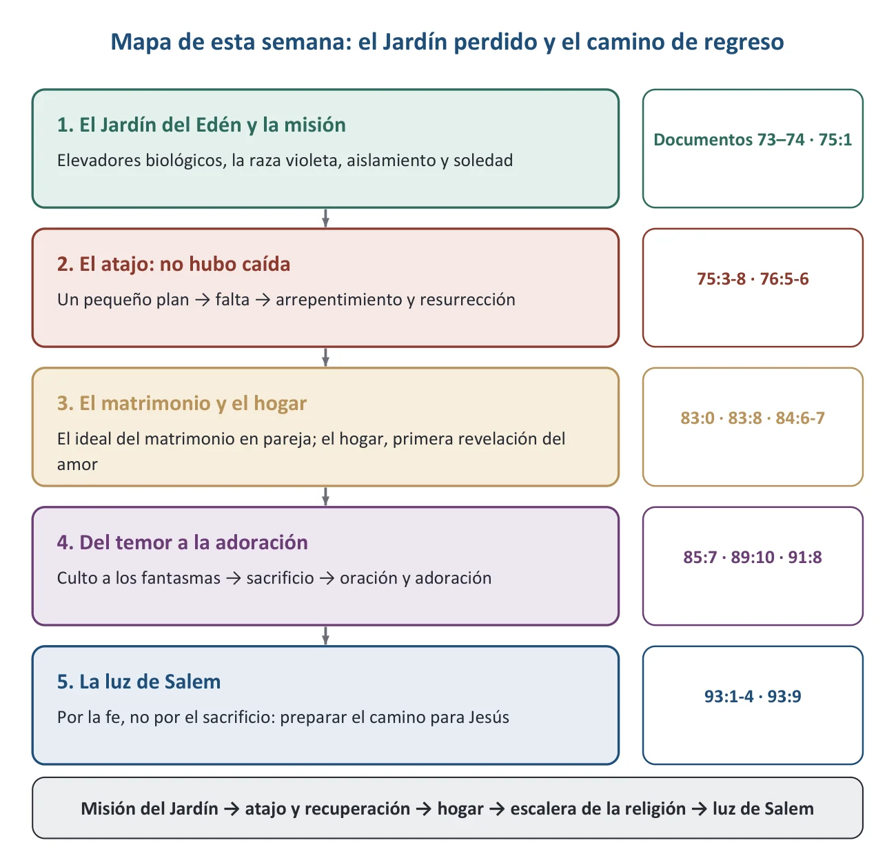
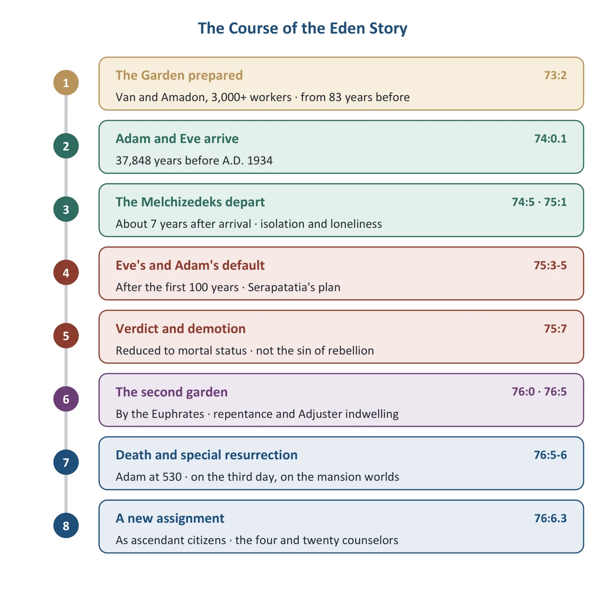
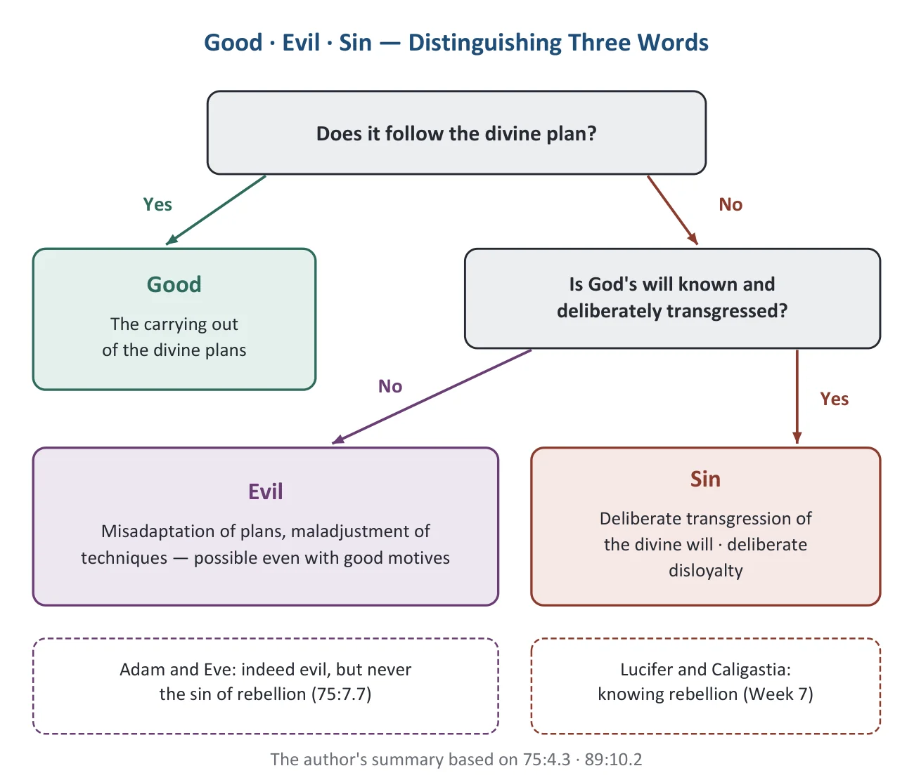
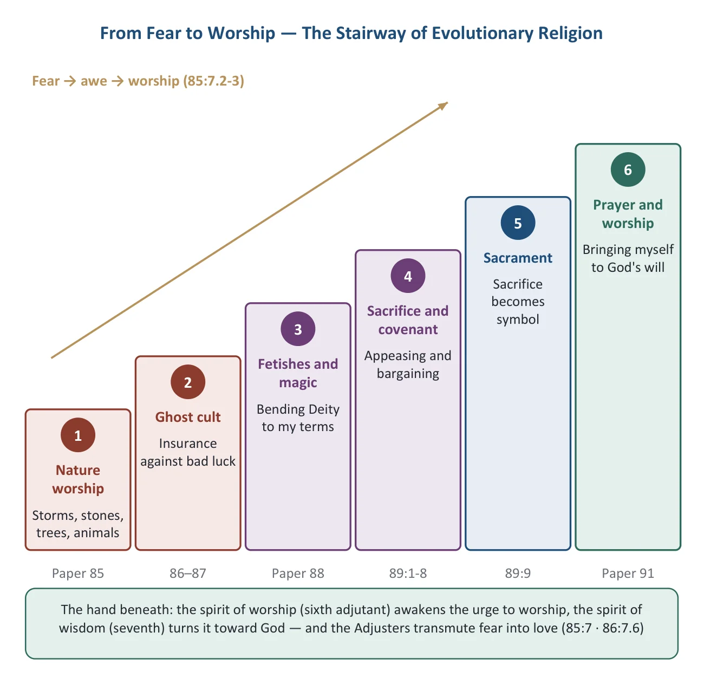
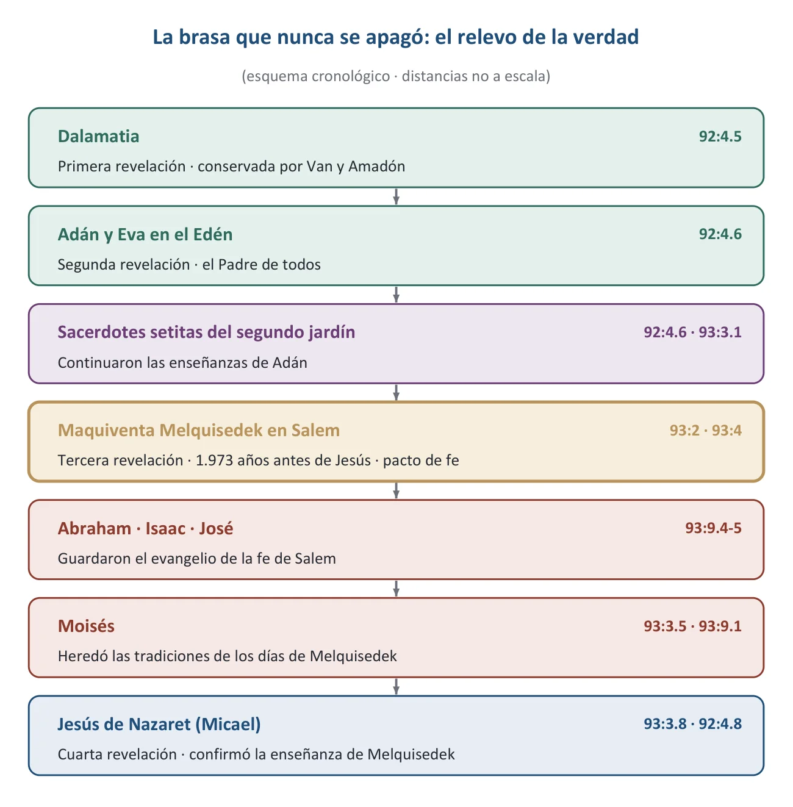

Lectura: Documentos 73–76 · Documentos 83–84 · selecciones de los documentos 85–92 · Documento 93

Hace unos 38.000 años, Adán y Eva vinieron a Urantia para elevar a la raza humana. Tentados por un atajo, incurrieron en falta; sin embargo, El libro de Urantia dice que no hubo «caída del hombre» y que la humanidad, de hecho, fue elevada. Esta semana seguimos la historia del Edén, el largo camino por el que han crecido el matrimonio y el hogar, la escalera por la que la religión subió del temor a la adoración, y a Melquisedek de Salem, que volvió a encender la verdad.
En los viejos senderos de montaña a veces hay un letrero gastado que dice «Atajo». El camino parece más corto que la ruta señalada, pero también se cuentan historias de excursionistas que se perdieron por él. Lo que lleva a la gente a tomar un atajo no suele ser un mal corazón, sino una impaciencia buena, el afán de ayudar pronto.
La historia del Jardín del Edén es conocida por muchos: la serpiente, el fruto prohibido, la expulsión y una maldición que, según se dice, cayó sobre toda la raza humana. El libro de Urantia cuenta esta historia con una luz muy diferente. En su centro no está una serpiente, sino un atajo, y no termina en una maldición, sino en una recuperación. El plan de Dios es más grande que el fracaso humano.
Después de la rebelión de Caligastia, Urantia permaneció mucho tiempo en tinieblas. Durante aquellos años los leales Van y Amadón predicaron que vendría un Hijo de Dios prometido, y durante ochenta y tres años antes de la llegada de Adán y Eva prepararon un jardín para recibirlo (73:2.2).
De su sede en las tierras altas y de sesenta y una colonias muy dispersas, Van y Amadón reclutaron un cuerpo de más de tres mil obreros dispuestos y entusiastas quienes, en reunión solemne, se comprometieron a esta misión de hacer los preparativos para el Hijo prometido —al menos esperado.73:2.3
El lugar elegido fue una estrecha península que se adentraba en el mar desde la costa oriental del Mediterráneo.
El sitio elegido para el Jardín era probablemente el paraje más bello del mundo entero, en su género, y el clima entonces era ideal. … En este lugar de reunión, se congregaba la crema y nata de la civilización de Urantia. Más allá de sus confines, el mundo estaba sumido en la oscuridad, la ignorancia y el salvajismo. Edén era el único punto risueño en Urantia73:3.6
El Edén no fue una edad de oro mítica, sino un lugar real de la historia. La península se hundió más tarde bajo el mar (73:7.1).
Y por fin llegaron los dos.
ARRIBARON Adán y Eva a Urantia, contando hacia atrás del año 1934, hace 37.848 años. … Siempre los Hijos e Hijas Materiales prestan servicio juntos. La esencia de su servicio estriba en no estar separados en ningún momento y en ninguna parte. Se concibieron para actuar en parejas; rara vez funcionan solos.74:0.1
Adán y Eva no fueron los primeros seres humanos. Los primeros seres humanos, Andón y Fonta, nacieron hace casi un millón de años (semana 8). Adán y Eva eran un Hijo y una Hija Materiales de Jerusem, la capital de nuestro sistema local. Su costumbre de trabajar siempre juntos tendrá gran peso más adelante en la historia.
¿A qué vinieron? El libro llama a Adán y Eva «elevadores biológicos». Su tarea era compartir su propio linaje, la raza violeta, con las razas evolucionarias y así elevar a la humanidad un escalón más en cuerpo y mente. Pero había un orden que seguir.
Los Melquisedek aconsejaron a Adán que no iniciara el programa de elevación y mezcla de las razas hasta que su familia alcanzara el medio millón. Nunca se pretendió que el Jardín fuera la residencia permanente de los adanitas. Habrían de convertirse en emisarios de una nueva vida para el mundo entero; habrían de movilizarse para la otorgación altruista a las razas necesitadas de la tierra.73:7.3
Primero se formaría una raza violeta fuerte; solo entonces saldría hacia el mundo entero. El plan llevaría cientos de años. El Jardín nunca estuvo destinado a ser un hogar donde establecerse, sino solo una línea de salida.
Urantia, sin embargo, no era un mundo fácil. La rebelión había cortado los circuitos que unían el planeta con el universo más amplio, y el destituido Caligastia seguía en la tierra, oponiéndose a cada plan de Adán (74:5.5). Cuando los Melquisedek que habían estado a su lado se marcharon al cabo de unos siete años, los dos quedaron solos.
Estaban aislados, y el tremendo sentimiento de soledad que los agobiaba fue aumentado más aún por la partida temprana de los síndicos Melquisedek. No podían comunicarse sino indirectamente, mediante las órdenes angélicas, con entes ajenos al planeta. Poco a poco se les enervaba la valentía, se les iban cayendo los ánimos por los suelos, y a veces, casi les fallaba la fe.75:1.4
Incluso un Hijo y una Hija venidos de lo alto conocieron la soledad y el desánimo. Este relato sincero hace que los dos salgan de la leyenda lejana y aparezcan como seres con un corazón muy parecido al nuestro.

Pasaron cien años, y el mundo fuera del Jardín había cambiado muy poco. El libro nombra en pocas palabras la raíz del problema.
Pero si hubieran sido más previsores y pacientes, algún día habrían llegado a triunfar. Ambos, sobre todo Eva, fueron demasiado impacientes; no estaban dispuestos a conformarse con la prolongadísima prueba de resistencia. Querían observar resultados inmediatos; y así fue, mas los resultados que consiguieron de este modo vinieron a ser desastrosos tanto para ellos como para su mundo.75:1.6
Al no lograr hacer vacilar a Adán, Caligastia se volvió hacia Eva. Serapatatia, un dirigente nodita que había llegado a ser el asociado más capaz de Adán, le presentó una idea: si naciera entre los noditas un dirigente con algo de sangre violeta, ¿no se podría ayudar de inmediato a las tribus que esperaban? El libro insiste en su buena fe.
Conviene nuevamente hacer hincapié en que Serapatatia fue totalmente honesto y completamente sincero en todo lo que proponía. Jamás sospechó que estaba en el juego de Caligastia y Daligastia.75:3.6
Eva ya había sido advertida.
los Melquisedek, antes de partir, se habían esmerado en instruir a Eva acerca de los peligros específicos que rodeaban su situación aislada en el planeta y le habían advertido en particular que nunca se alejara de la vera de su consorte, es decir, que no probara métodos personales ni secretos de fomentar sus empresas mutuas.75:2.4
Sin embargo, los encuentros se volvieron cada vez más privados, y un plan que maduró durante más de cinco años llevó finalmente a Eva a un encuentro con Cano, un dirigente espiritual de los noditas.
Influida por los halagos, el entusiasmo y gran persuasión personal, Eva accedió en el acto a embarcarse en la empresa mucho discutida, a agregar su propio plan de salvación del mundo al designio divino más grande y trascendental. Antes de llegar a hacerse cargo de lo que acontecía, ya había dado el paso fatal. Ya estaba hecho.75:3.9
El núcleo de la tragedia está en las palabras «su propio plan de salvación del mundo». Eva no pretendía abandonar el plan de Dios; pretendía añadirle algo. El objetivo era bueno, pero el método se apartó del camino señalado.
¿Qué fue, entonces, este acto? Los serafines que escribieron este documento distinguen tres palabras.
El bien es la ejecución del designio divino; el pecado es una transgresión deliberada de la voluntad divina; el mal es la mala adaptación de los designios y el mal ajuste de las técnicas que resultan en la discordia universal y la confusión planetaria.75:4.3
Si bien se había concebido y ejecutado este proyecto para modificar el designio divino con entera sinceridad y sin nada más que sublimes motivos respecto del bienestar del mundo, constituyó un acto del mal porque representaba el camino errado para lograr fines justos, porque se desvió del camino acertado, el designio divino.75:4.6
El mal puede surgir tanto del método como del propósito. Cuando las buenas intenciones se encuentran con un método equivocado, sobreviene la confusión. Pero eso no es lo mismo que el pecado. El pecado es conocer la voluntad de Dios y oponerse a ella deliberadamente.

Cuando Adán supo lo que Eva había hecho, fue al día siguiente a ver a Laotta, una mujer nodita, y cometió la misma locura. Aquí el libro detiene en seco al lector.
Pero no malentendáis. Adán no se engañó; bien sabía qué hacía; optó adrede por compartir el mismo destino que Eva.75:5.2
No fue la elección correcta. Pero debajo de ella corría un amor que no quería dejar sola a su compañera. Los dos que habían sido hechos para trabajar juntos siguieron juntos incluso al caer.
El veredicto de Gabriel fue «contumacia». Los dos no habían cumplido el pacto que se les había confiado y fueron reducidos al estado de mortales (75:7.1-3). Pero el veredicto llevaba una salvedad importante.
Caligastia sí logró atrapar a Adán y Eva, pero no logró su objetivo de dirigirlos en rebelión abierta contra el gobierno del universo. Lo que habían hecho, en efecto, fue malo, pero nunca se les declaró culpables por desacato a la verdad, tampoco participaron con conocimiento de causa en la rebelión contra el justo régimen del Padre Universal y su Hijo Creador.75:7.7
Durante miles de años muchos han creído que, por la falta del primer hombre, toda la raza humana nace bajo una maldición. El documento 74 observa que esas visiones eran desalentadoras porque se apoyaban en la creencia de un retroceso más que de un avance (74:8.13). El documento 75 habla con claridad.
No ha habido ninguna «caída del hombre». La historia de la raza humana consiste en la evolución progresiva, y el autootorgamiento adánico dejó a los pueblos del mundo bastante mejor que en su previa condición biológica.75:8.2
En efecto cayeron Adán y Eva de su estado superior de filiación material hasta el estado inferior de hombre mortal. Pero esto no constituyó la caída del hombre. La raza humana ha sido mejorada a pesar de las consecuencias inmediatas de la falta adánica.75:8.1
Lo que cayó fue la condición de dos personas, no la raza humana. De esta historia el autor extrae una advertencia y un consuelo.
Jamás en tu ascenso al Paraíso, te ganarás nada intentando impacientemente eludir el designio divino establecido mediante atajos, invenciones personales u otros artificios para facilitar el avance en el camino de la perfección, para la perfección y hacia la perfección eterna.75:8.5
Formamos parte de una gigantesca creación, por tanto no es extraño que no funcione todo a la perfección; nuestro universo no fue creado en perfección. La perfección es nuestra meta eterna, no nuestro origen.75:8.6
Esa última oración cambia nuestra manera de ver a las personas. No somos seres que han caído de la perfección, sino seres que suben hacia ella. Incluso el hecho de que puedan ocurrir errores se ve de otro modo con esta luz.
Pero en nuestro universo evolutivo de perfección e imperfección relativas, nos alegramos de que sean posibles el desacuerdo y los malentendidos, pues, por este medio se ponen de manifiesto la realidad y las acciones de la personalidad en el universo. … ¡Qué universo más glorioso, por cuanto es personal y progresivo, no meramente mecánico, o aún, pasivamente perfecto!75:8.7
Adán y Eva dejaron el primer jardín a los noditas, viajaron hacia el este y fundaron un segundo jardín junto al Éufrates (76:0.1). Allí recibieron un don inesperado.
Pero poco después de su reducción al estado de mortales, se volvieron conscientes de una nueva presencia dentro de ellos, y se dieron cuenta de que la condición humana, juntamente con el arrepentimiento sincero, habían hecho posible que un Ajustador morara dentro de ellos.76:5.2
Como Hijo e Hija Materiales no tenían Ajustadores del Pensamiento; una vez que se volvieron mortales, llegaron los Ajustadores. Donde algo se perdió, se abrió un nuevo camino. Adán vivió 530 años, y al tercer día después de su muerte despertó en los mundos de estancia en una resurrección especial (76:6.2).
Dejaron Jerusem como ciudadanos permanentes —Hijos de Dios; volvieron como ciudadanos ascendentes —hijos del hombre.76:6.3
El documento 76 recoge su historia con estas palabras.
Así, pues, termina la historia del Adán y Eva Planetarios de Urantia, una historia de pruebas, tragedias y triunfos, por lo menos un triunfo personal para vuestro Hijo y vuestra Hija Materiales bienintencionados pero engañados, e indudablemente, a la postre, una historia de triunfo final para su mundo y sus habitantes perturbados por la rebelión y acosados por el mal.76:6.4
Añade que este escenario de fracaso se convirtió, en cambio, en el trasfondo ante el cual se revelaría un amor mayor.
No es que necesitara Urantia un Hijo Creador para poner en regla sus asuntos enredados; sino que el mal y el pecado en Urantia ofrecieron al Hijo Creador un trasfondo más espectacular ante el cual revelar el amor, la misericordia y la paciencia sin par del Padre Paradisiaco.76:5.7
Un malentendido común: por el pecado de Adán y Eva cayó toda la raza humana, y todos heredan ese pecado y nacen bajo una maldición. Lo que dice El libro de Urantia: al incurrir en falta, Adán y Eva perdieron su propia condición, pero no cometieron el pecado de rebelión (75:7.7). No hubo «caída del hombre»; de hecho, la humanidad fue elevada por su contribución (75:8.1-3). La perfección no es nuestro origen, sino nuestra meta (75:8.6).
Génesis 3 cuenta cómo Dios llamó en el Huerto: «¿Dónde estás tú?» (Génesis 3:9). El documento 75 explica esta escena como el recuerdo de la conversación de aquella noche entre los dos y «la voz en el Jardín» seráfica (75:4.8). También considera la creación en seis días y la historia de la costilla como tradiciones surgidas de recuerdos mezclados de la época adánica (74:8.1-3).
Uno de los legados que dejó el Edén fue el ideal del hogar.
Adán y Eva ejercieron una influencia duradera sobre toda la humanidad; por primera vez en la historia del mundo, se veía a hombres y mujeres trabajando juntos en el jardín. El ideal edénico, la entera familia en tarea de horticultura, era una nueva idea en Urantia.84:7.8
Los documentos 82 a 84 de la tercera parte siguen la evolución del matrimonio y del hogar. En una primera lectura, las muchas costumbres desconocidas, como la compraventa de esposas y el matrimonio plural, pueden desconcertar. Pero si seguimos la corriente principal, la dirección se vuelve clara. Del matrimonio, el documento 83 dice:
Éste ha progresado en forma constante partiendo de los apareamientos promiscuos y sin reglamentaciones dentro de la horda, pasando por muchas variaciones y adaptaciones, hasta la aparición de aquellas normas matrimoniales que finalmente culminaron en la realización de los apareamientos por pareja, la unión de un hombre y una mujer para establecer un hogar del más alto orden social.83:0.1
| Etapa | Cómo era | Lo que mantenía unido el matrimonio |
|---|---|---|
| Apareamientos de horda | Uniones sueltas que podían terminar en cualquier momento | El vínculo instintivo entre madre e hijo |
| La era de la propiedad | Compra de esposas y dote; la mujer como propiedad del hombre | La propiedad, la presión social, los tabúes |
| La era de la personalidad | Matrimonio motivado por el amor; avanzan los derechos de la mujer | Nuevos códigos morales y entrega mutua |
| El ideal del matrimonio de pareja | Unión fiel de un hombre y una mujer | Lealtad por el bien de la crianza de los hijos |
¿Es el matrimonio una institución divina o humana? La respuesta del libro es sorprendente.
El matrimonio que culmina en el hogar es indudablemente la institución más excelsa del hombre, pero es esencialmente humana83:8.1
Esto no menosprecia el matrimonio. Significa que el matrimonio es el fruto que la humanidad ha cultivado a lo largo de cientos de miles de años de ensayo y error. Ese fruto todavía no está del todo maduro, pero se convierte en un sueño que impulsa a la humanidad hacia adelante.
El matrimonio siempre ha sido y sigue siendo el supremo sueño de idealismo temporal del hombre. Aunque este hermoso sueño pocas veces se realiza en su plenitud, perdura como ideal glorioso, atrayendo para siempre a la humanidad en progreso hacia mayores esfuerzos para la felicidad humana.83:8.6
El documento 84 admite francamente que los hombres y las mujeres nunca pueden comprenderse del todo (84:6.3). Sin embargo, esa diferencia no es motivo de preocupación.
La diferencia de naturaleza, reacción, puntos de vista y pensamiento entre hombres y mujeres, en vez de ocasionar preocupación, debería ser considerada altamente beneficiosa para la humanidad, tanto individual como colectivamente.84:6.5
Los hombres y las mujeres se necesitan mutuamente en sus carreras morontiales y espirituales así como también en sus carreras mortales. … Aun en Havona, los peregrinos que otrora fueran hombres y mujeres seguirán ayudándose mutuamente en el ascenso al Paraíso.84:6.6
El hogar es la primera aula en la que las personas aprenden la fraternidad.
La familia es la unidad fundamental de la fraternidad en la que padres e hijos aprenden esas lecciones de paciencia, altruismo, tolerancia e indulgencia que son tan esenciales para la realización de la hermandad entre los hombres.84:7.28
Y el documento 84 nos deja sus palabras más profundas sobre el hogar.
Pero aún más, la verdadera familia —una buena familia— revela a los procreadores paternos la actitud del Creador hacia sus hijos, mientras que al mismo tiempo estos verdaderos padres ilustran para sus hijos la primera de una larga serie de revelaciones en el ascenso del amor del Padre Paradisiaco por todos sus hijos universales.84:7.30
El lugar donde un niño aprende por primera vez el amor de Dios no es un libro ni un lugar de culto, sino los brazos de sus padres. Día tras día, los buenos padres muestran a un niño cómo es el Padre que está en los cielos.
Un malentendido común: el matrimonio es un sacramento unido directamente por Dios y, por tanto, es en sí mismo una unión sagrada. Lo que dice El libro de Urantia: el matrimonio es la institución más excelsa del hombre, pero es esencialmente humana, y nunca debería haberse llamado sacramento (83:8.1). Al mismo tiempo, el libro dice que el ideal mortal del matrimonio es «humanamente sagrado» (83:8.5). Esto no rebaja el matrimonio; significa que el matrimonio es una institución de la que las personas deben hacerse responsables y que deben cuidar.
En la semana 1 distinguimos la religión evolucionaria de la religión revelada. Los documentos 85 a 92 muestran cómo creció realmente la religión evolucionaria. Su punto de partida fue el temor.
LA RELIGIÓN primitiva tuvo un origen biológico, un desarrollo evolucionario natural, aparte de las asociaciones morales y de toda influencia espiritual. Los animales más elevados tenían temores, pero no ilusiones, por lo tanto no tenían religión. El hombre crea sus religiones primitivas a partir de sus temores y mediante sus ilusiones.85:0.1
Los primeros seres humanos adoraban las tormentas y los volcanes, las piedras, los árboles y los animales. Cuando los muertos aparecían en sueños, creían que habían vuelto fantasmas, y surgieron ritos para apaciguarlos.
El culto a los fantasmas no era más ni menos que un seguro contra los desastres; no tenía nada que ver con invertir para ganar elevados beneficios futuros.87:0.1
Siguieron los fetiches, los amuletos y la magia.
Todo esto puede parecer necio, pero el libro muestra una mano que actúa por debajo.
pero durante todo este tiempo existía en operación en estas mismas mentes primitivas el espíritu ayudante sexto, que había sido otorgada a estos pueblos como influencia directora para esta fase de la evolución humana. Y este espíritu estaba constantemente estimulando el impulso a la adoración en la especie humana, sin importarle cuán primitivas fueran sus primeras manifestaciones.85:7.1
Cuando el impulso de adoración está disciplinado y dirigido por la sabiduría — pensamiento meditativo y experiencial— comienza a evolucionar hacia un fenómeno de verdadera religión.85:7.3
El espíritu de adoración pone a las personas de rodillas, y el espíritu de sabiduría hace que esas rodillas se aparten de la naturaleza y se vuelvan hacia el Dios de la naturaleza. Ni siquiera el temor se desperdició.
La religión primitiva preparó el terreno de la mente humana, mediante la fuerza poderosa y espeluznante del temor falso, para recibir una fuerza espiritual auténtica de origen sobrenatural, el Ajustador del Pensamiento. Y los Ajustadores divinos han laborado por siempre para transmutar el temor a Dios en amor a Dios.86:7.6

De todas las cargas de la religión evolucionaria, el sacrificio fue la que pesó más tiempo sobre la gente. Ofrecían animales para apaciguar a los dioses y, a veces, incluso seres humanos. Con las edades el sacrificio se encontró con la idea del pacto y finalmente se transformó en un sacramento simbólico (89:8.4, 89:9.4). Resumiendo esa larga historia, el documento 89 redefine el pecado y el perdón.
El pecado ha de redefinirse como deslealtad deliberada a la Deidad. … El sentido o sentimiento de culpa es la conciencia de la violación de las costumbres normativas; no es necesariamente pecado. No hay pecado auténtico a menos que haya deslealtad consciente a la Deidad.89:10.2-3
No es necesario buscar el perdón, sino tan sólo recibirlo en forma de conciencia del restablecimiento de las relaciones leales entre la criatura y su Creador. Y todos los hijos leales de Dios son felices, aman el servicio y progresan constantemente en la ascensión al Paraíso.89:10.6
El perdón no es algo que se compra a un precio. Es un don que ya está en nuestras manos en el momento en que volvemos al Padre.
El fruto más hermoso de la religión evolucionaria es la oración. El documento 91 traza una línea clara entre la oración y la magia.
La magia era un intento de adaptar la Deidad a las condiciones; la oración es el esfuerzo de adaptar la personalidad a la voluntad de la Deidad. La verdadera oración es tanto moral como religiosa; la magia no es ni lo uno ni lo otro.91:8.2
| Punto de comparación | Magia | Verdadera oración |
|---|---|---|
| Dirección | Somete a los dioses a mis condiciones | Me pone en armonía con la voluntad de Dios |
| Lo que busca | Cosas y gratificación | Valores y crecimiento |
| Carácter | Ni moral ni religiosa | Moral y religiosa a la vez |
| Fruto | El temor permanece | Cambian las actitudes y crece el espíritu |
Pero la verdadera oración logra la realidad. Aunque las corrientes de aire sean ascendentes, el pájaro no podrá ascender a menos que extienda las alas. La oración eleva al hombre porque es una técnica de progresar mediante la utilización de las corrientes espirituales ascendentes del universo.91:8.9
Ora tan sólo por valores, no por cosas; por crecimiento, no por gratificación.91:8.13
La oración no es una técnica para cambiar a Dios, sino las alas que nos elevan. ¿Cómo responde Dios, entonces, a la oración?
Dios responde a la oración del hombre dándole una mayor revelación de la verdad, una enaltecida apreciación de la belleza, y un concepto aumentado de la bondad. La oración es un gesto subjetivo, pero pone en contacto con realidades objetivas poderosas en los niveles espirituales de la experiencia humana91:8.11
Tras recorrer esta larga escalera, el documento 92 invita a una mirada generosa hacia las muchas religiones del mundo.
Las muchas religiones de Urantia son todas buenas en cuanto llevan al hombre hacia Dios y traen la comprensión del Padre al hombre. … No existe religión en Urantia que no pudiera aprovechar el estudio y asimilar lo mejor de las verdades contenidas en cada una de las otras fes, porque todas contienen verdades.92:7.3
Las enseñanzas del Edén fueron transmitidas por los sacerdotes setitas del segundo jardín, pero con las edades se fueron debilitando cada vez más.
La verdad revelada estaba amenazada de extinción durante los milenios que siguieron al aborto de la misión adánica en Urantia. Las razas humanas, aunque progresaban intelectualmente, estaban lentamente perdiendo terreno en el campo espiritual. Alrededor del año 3000 a. de J. C. el concepto de Dios se había vuelto muy nebuloso en la mente de los hombres.93:1.1
En aquel momento Maquiventa, uno de los doce Melquisedek encargados de Urantia, se ofreció como voluntario. Solo seis veces en la historia de Nebadon había aparecido un Melquisedek en un mundo en forma humana (93:1.3). Se otorgó a este mundo como «Hijo de urgencia».
1.973 años antes del nacimiento de Jesús, Maquiventa se otorgó a las razas humanas de Urantia. Su advenimiento no fue espectacular; su materialización no fue presenciada por ojos humanos. … «Soy Melquisedek, sacerdote de El Elyón, el Altísimo, el único Dios».93:2.1
En Salem, el lugar que más tarde sería Jerusalén, fundó una comunidad y una escuela, y enseñó allí durante noventa y cuatro años (93:2.4, 93:4.16).
Melquisedek enseñó a sus seguidores todo lo que ellos tenían capacidad para recibir y asimilar. … Pero este gran maestro subordinó todo abajo de la doctrina del Dios único, una Deidad universal, un Creador celestial, un Padre divino.93:3.6
La enseñanza de Melquisedek era sumamente sencilla. El credo de Salem tenía solo tres líneas, y la segunda era su núcleo.
2. Acepto el pacto de Melquisedek con el Altísimo, según el cual se me otorga el favor de Dios por mi fe, y no por sacrificios ni por holocaustos.93:4.3
Fe, no sacrificio. Si recordamos la larga historia del sacrificio de la sección anterior, podemos ver cuánto se adelantaba esto a su tiempo. Por eso a la gente le resultó tan difícil aceptar el mensaje.
Pero aun tan corta y simple declaración de fe, era excesiva y demasiado avanzada para los hombres de esos días. Simplemente no podían aferrarse a la idea de obtener el favor divino por nada —por la fe solamente. La creencia de que el hombre había nacido para ser redimido por los dioses estaba demasiado arraigada en ellos.93:4.5
Aunque no se permitían sacrificios dentro de la colonia, Melquisedek sabía cuán difícil es arrancar repentinamente costumbres largamente establecidas y por consiguiente ofreció sabiamente a este pueblo el sustituto de un sacramento de pan y vino en vez del antiguo sacrificio de carne y sangre.93:4.14
Aquí vemos de nuevo el principio de la semana 1: la revelación se da en la medida en que la gente puede recibirla.
Lo que hizo Melquisedek, y lo que no hizo, estaba claro.
Como Jesús, Melquisedek se dedicó estrictamente al cumplimiento de la misión de su autootorgamiento. No intentó reformar las costumbres establecidas, cambiar los hábitos del mundo, ni promulgar siquiera prácticas sanitarias avanzadas ni verdades científicas. Vino para llevar a cabo dos tareas: Mantener viva en la tierra la verdad del Dios único y preparar el camino para el autootorgamiento en forma mortal subsiguiente de un Hijo Paradisiaco de ese Padre Universal.93:4.15
Su discípulo más querido fue Abraham. Abraham creyó solo a medias, y aun eso «le fue contado por justicia» (93:4.5). La verdad de Salem pasó por Abraham, Isaac y José hasta Moisés, y al final de ese camino vino Jesús.
Y Micael, cuando apareció en la tierra, confirmó todo lo que Melquisedek había enseñado sobre el Padre del Paraíso.93:3.8

Génesis 14 registra brevemente: «Entonces Melchîsedec, rey de Salem, sacando pan y vino; el cual era sacerdote del Dios alto» (Génesis 14:18). Poco después, Abram creyó a Jehová, «y contóselo por justicia» (Génesis 15:6). Hebreos 7 ve en Melquisedek una figura de Jesús. El documento 93 relata los noventa y cuatro años de ministerio que hay detrás de estos breves registros.
El Jardín se perdió, pero el camino nunca quedó cortado. La semana próxima entramos en la parte más íntima de esta larga historia: Dios que mora dentro de cada persona.